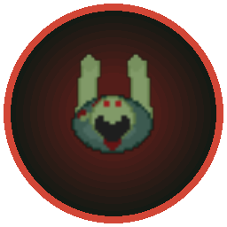

Carregando o Último Sobrevivente... (na primeira vez demora uns 30 segundos)
(battery level unknown)
(charging state unknown)

ÚLTIMO SOBREVIVENTE
um apocalipse zumbi em mundo aberto
Carregando o jogo...
Na primeira vez demora uns 30 segundos: o navegador está baixando o jogo.
Não é vírus, não precisa instalar nada.
ATÉ A PRÓXIMA, SOBREVIVENTE
Seu jogo foi salvo.
Se a janela não fechar, aperte Alt + F4.
📱↻
Vire o celular deitado para jogar
Esquerda: joystick para andar · Direita: toque para mirar e atirar